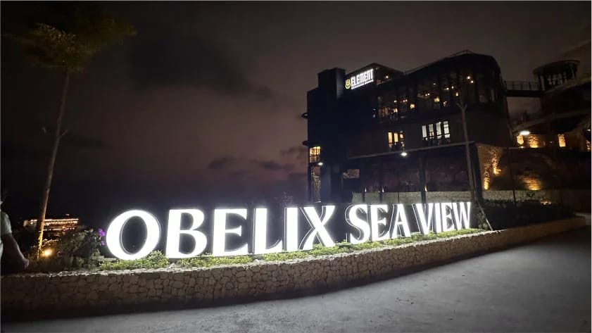

Obelix Sea View merupakan salah satu obyek wisata baru kekinian yang berlokasi di Kawasan perbukitan sebelah Timur Pantai Parangtritis. tepatnya di Jalan Paralayang, Dusun Watugupit, Padukuhan Gabug, Kalurahan Giricahyo, Kapanewan Purwosari, Kabupaten Gunungkidul, Daerah Istimewa Yogyakarta (DIY).
Yang ditawarkan adalah destinasi dengan pemandangan Pantai Parangtritis dan Samudra Hindia dari ketinggian. Perpaduan antara pemandangan lautan dari atas bukit, resto serta spot foto kekinian menjadikan Obelix Sea View sebuah destinasi wisata yang wajib dikunjungi ketika berwisata ke Yogyakarta bersama keluarga dan teman.